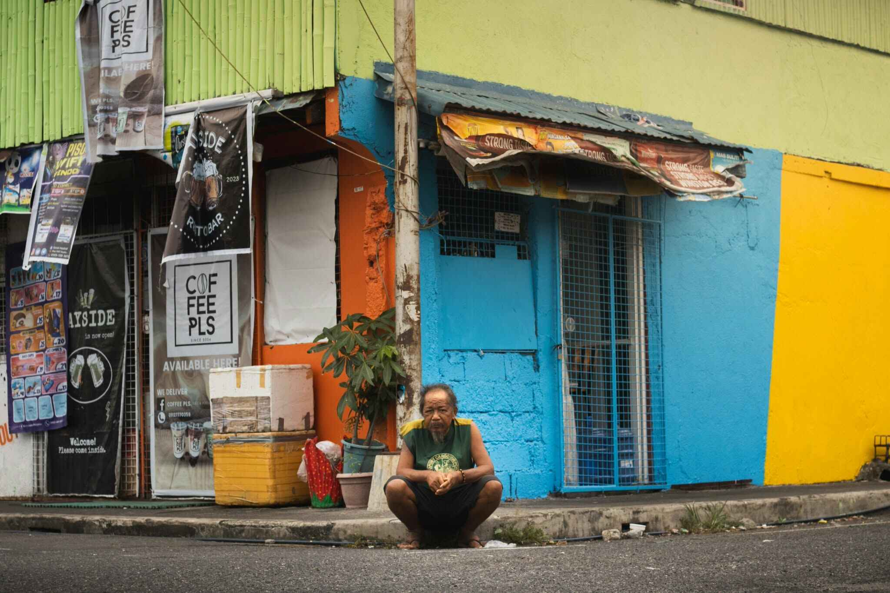
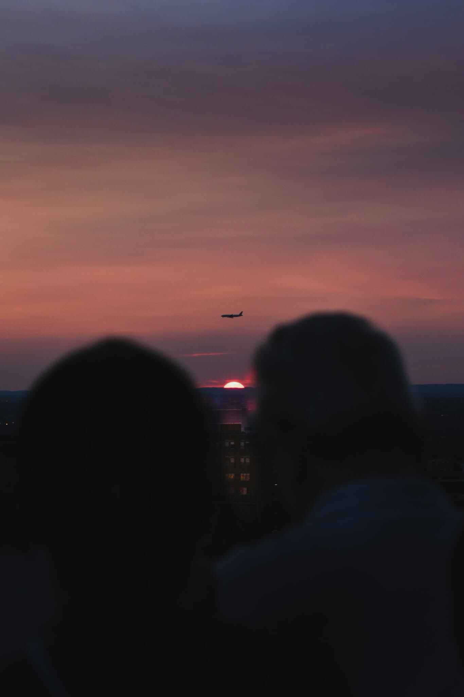
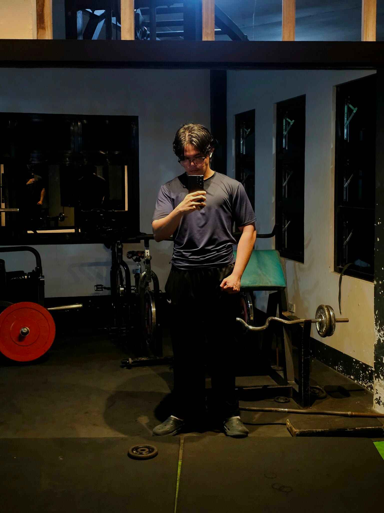
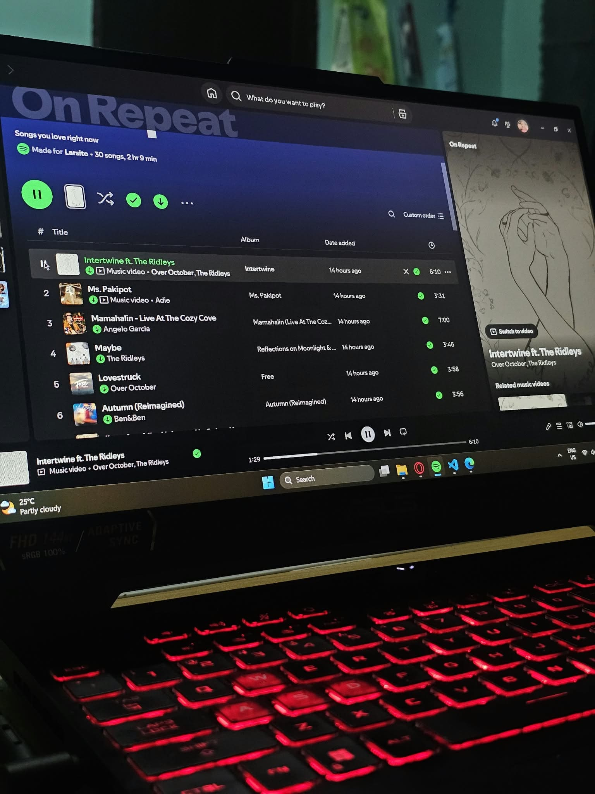
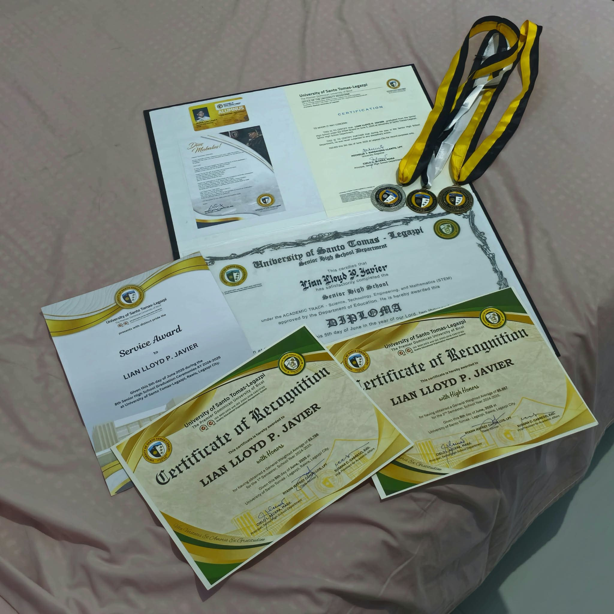
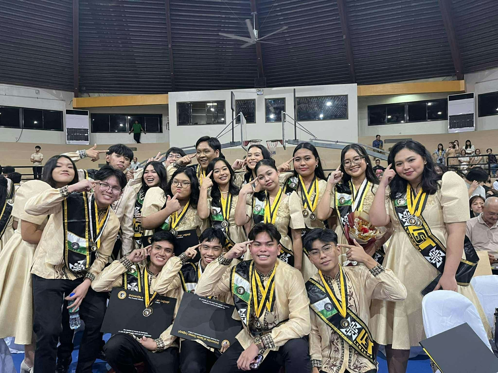
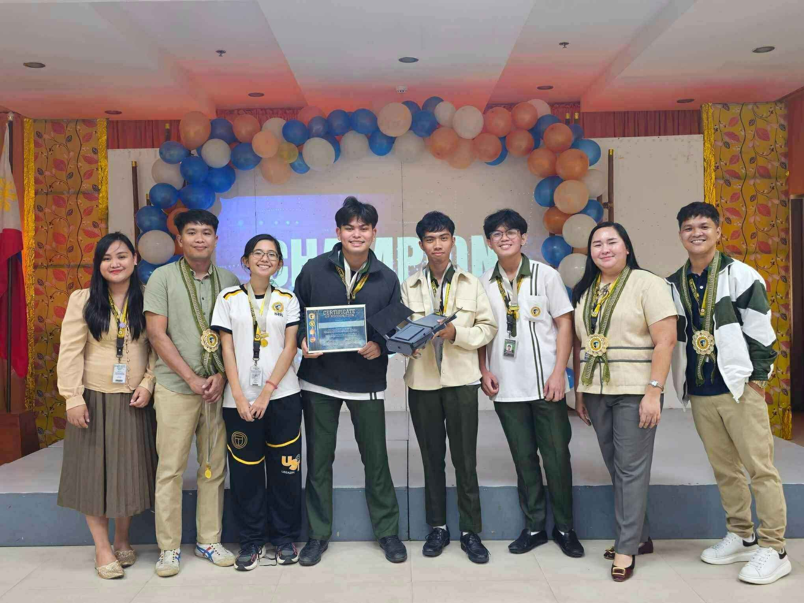
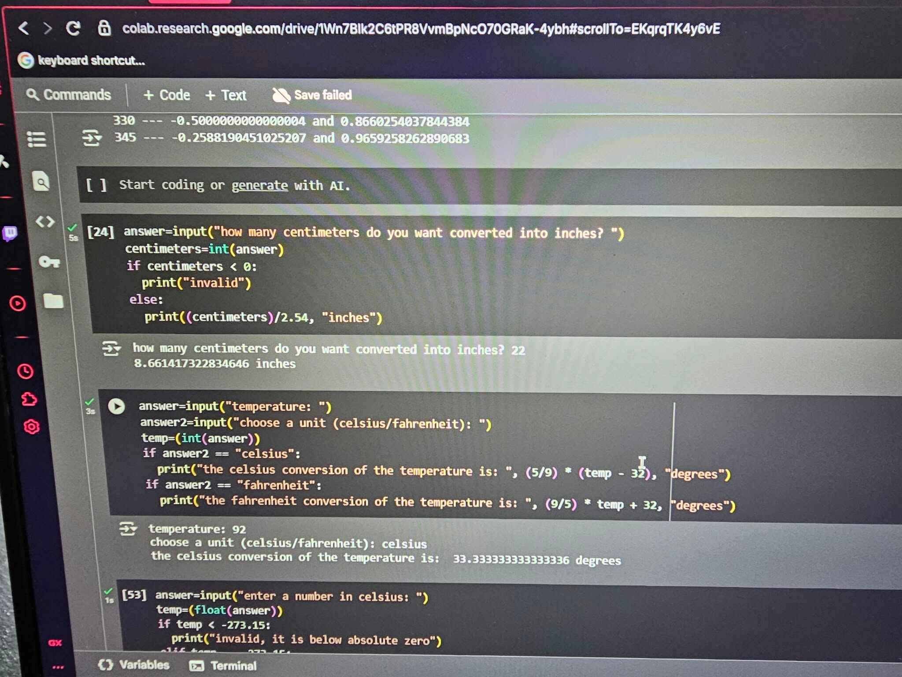
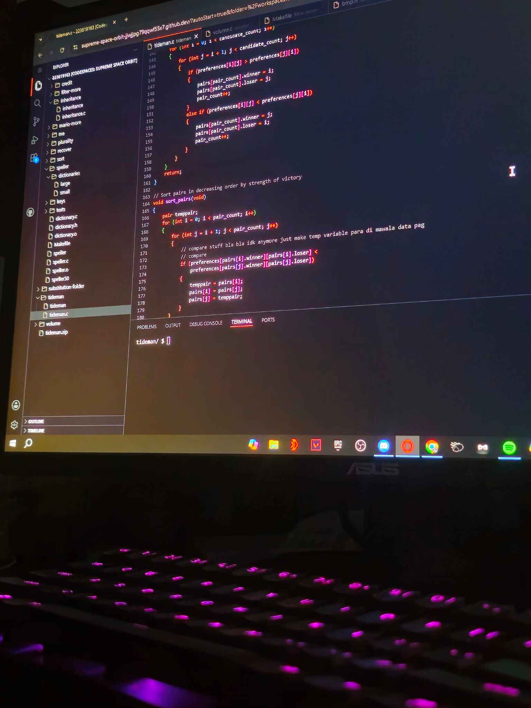
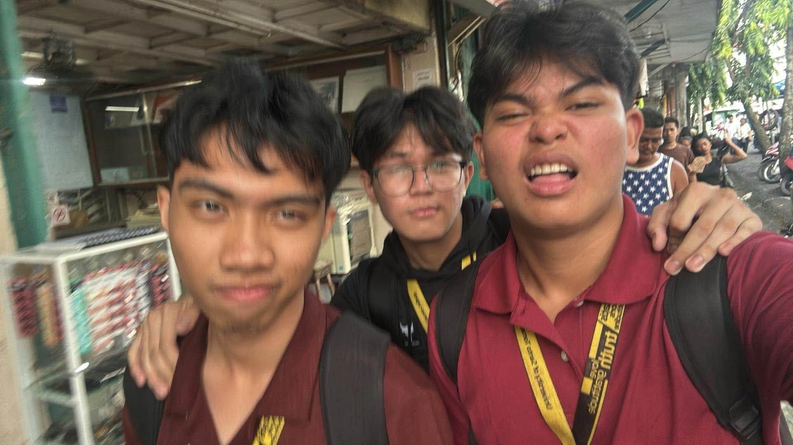

Sup
- Preferred Name: Li, Lian, Lars
- Program: Bachelor of Science in Computer Science (BSCS)
- Year Level: 1st Year (Bicol University)
I am a photography addict that got into CS cause I decided computer engineering was too expensive.
Frame Highlight
Hover over any print to inspect the frame, or click a print to open it in the viewing room.

Inspect Print 01
Inspect Print 03Complete Photography Portfolio
Check out more here! I have more cool photos in my portfolio!
About Me
I'm Lian, photographer, your local gym rat, Batman wannabe and the one who takes up the most hours on Spotify.
My Mindset
One thing to know, I'm an obsession freak egoist. Once I decide I want something, I get it no matter what, and that applies a lot to my education. If I fail an exam for the first time, I'll grind every day for weeks just to get better results, especially since I'm way too much of a perfectionist. I'm so spiteful and prideful that I find genuine joy in proving people wrong. I just love the feeling of beating the odds, being challenged, and having the world against me, and my obsession contributes a lot to it.
A Quote I Live By
"I am afraid. Not of life, or death, or nothingness, but of wasting it as if I had never been."
Interests & Hobbies
- Photography
- Combat Sports / Gym
- Listening to music
My Typical Day
- Start the morning slowly by staying in bed for 30 minutes to an hour, adjusting my wake-up time just so I never have to rush.
- Head to class, study, and hang out with friends.
- Grab afternoon coffee and lunch, then take a walk around the area with earphones on.
- Treat myself to a good dinner for a day well spent.
- Put in more study hours at night and sneak in a workout despite the workload.
How I Got Into My Hobbies
Photography: Ever since the 10th grade, photography has been my whole life. I didn't even take good photos on a phone before picking up that DSLR camera for a school project. Photography really was a way for me to express how I see the world, a story to be told, the smallest details, there is so much a camera can capture. The calloused hands of a person fighting for survival in the city, the eyes of a person in love, the beautiful scenery of a moment's pass. Though with this, the hobby also led to a big struggle. It fed into my perfectionism, I was never really satisfied with my photos, always wanting to take better and better ones to post. It got so bad to the point I actually had a creative block for months and all I took was generic mediocre photos at the time. But, there are upsides, everyone knows me for the camera, I've gotten paid, been recognized, and this hobby is still one of my biggest enjoyments in life. Whenever I just go out on the street, especially with friends, I get reminded how much I like doing things FOR MYSELF and myself only.
Gym: I really got into the gym because of bullying, everyone saying I was fat, from family to friends making fun of my size, and I guess a lot of "failures". After being told by someone to change, I decided to step into that nearby gym for the first time and honestly I was scared. Lifting and dieting, on the diet part, I already made a mistake of lowering my calories so much that I was practically malnourished after 3 months of eating the same calories a child would. It was dark times back then and with the familiar saying "pain in the body mutes out pain in the mind" I just kept going. As time went on, I started to genuinely enjoy it, started getting compliments, started appreciating myself more, getting to know people from the community better, even having people ask what I did up to that point, not knowing everything was fueled by self-hatred. Now, the gym is something I love putting into my daily routine and it makes me wonder, how many other people feel the same way? It makes me want to help others going through a similar experience. And I have the gym, the community, and the days fulfilled in it to thank for it all.

InspectMusic: It's simple, listening to music is my way of shutting out the loud world, sometimes surroundings get too overwhelming, stimulating, and it just comes at the wrong time. Having earphones ready at all times helps with it. Especially when the ones making all the noise is your own mind. It really helps cancel out anything your brain tries to register as noise as it's already occupied with the music. Plus, I like singing so I have a genuine appreciation for artists and their songs.

InspectMy Class Schedule
| Subject | Day | Time |
|---|---|---|
| CS 101: Introduction to Computing | Monday | 09:00 AM - 12:00 PM |
| CS 102: Computer Programming 1 | Monday, Wednesday | 01:00 PM - 04:00 PM |
| Tuesday | 01:00 PM - 03:00 PM | |
| Math 101: Mathematical Analysis 1 | Tuesday, Thursday | 09:00 AM - 10:30 AM |
| Friday | 10:30 AM - 12:00 PM | |
| PATHFit 3: Menu of Dance, Sports, Martial Arts, Exercise, Outdoor and Adventure Activities |
Wednesday | 05:00 PM - 07:00 PM |
| Phys 1: Physics for Computing | Tuesday, Thursday | 10:30 AM - 12:00 PM |
| GEC 16: Art Appreciation | Thursday | 01:30 PM - 04:00 PM |
Background
Education
- Elementary to Junior High School: Catholic Central School of Tabaco
- Senior High School: University of Santo Tomas-Legazpi
- 1st Year College (Prior to Transferring): University of Santo Tomas-Legazpi
- Currently: Bicol University

Inspect Grad 01
Inspect Grad 02Tech-Related Background

Inspect Tech 01
Inspect Tech 02
Inspect Tech 04Organizations
- Elementary to Junior High School: Music and Glee Club, Sci-Math Club
- Senior High School: The Vitruvian (Photojournalist)
- 1st Year College (Prior to Transfer): The Aquinian Herald (Photojournalist)
- Bicol University: The Bicol Universitarian (Photojournalist)
My Path Into Computing
I honestly didn't think I'd get into anything tech- or engineering-related. Growing up, I always envisioned myself going into healthcare as an optometrist so I could help people dealing with eye conditions similar to mine. That changed in senior high school when I met my best friend, Jem, he made a big impact on me, and I ended up enjoying math far more than I ever expected.
Jem, Anthony, and I all started out as Computer Engineering students, but rising tuition and expenses, combined with dissatisfaction at my previous school, pushed me to take the risk of shifting and transferring into Computer Science at Bicol University. Getting into the university on a second attempt, especially after failing BUCET the first time, was a long and difficult process, but it paid off. Even if BSCS wasn't my original childhood plan, I'm happier than ever studying in a much stronger environment and in a program closely aligned with where I started.

Inspect PrintFavorites & Skills
One website I enjoy visiting is YouTube because I can watch all my favorite videos, especially Minecraft videos.
Tools, Favorites & Skills I Am Building
- Photography Gear & Workflow: Shooting on a Sony A6700 and editing in Lightroom Mobile on a broken phone.
- Programming & Tech Stack: Versed in Java and building competence in C, with plans to learn ReactJS, Rust, and C++ for a solid full-stack lineup.
- Music, Books & Games: Listening to Grentperez and Rob Deniel, reading Flowers for Algernon, and playing Red Dead Redemption 2 (RDR2).
Goals
I hope to learn a lot during my stay at Bicol University, especially becoming industry-ready in Artificial Intelligence, Machine Learning, and Full Stack Development. I want to land a secure job and be part of the few that say, "Computer science is the future, and I am part of it."
My Top 3 Goals
- Land a job at one of the top tech companies
- Become a fullstack developer
- Live on a farm
Over the next few years, I hope to become a more well-rounded individual across the fields I am into, learning more programming languages, strengthening my grasp of algorithms, and getting better with creatives.
Reflection
My first version of this site was rough. It was basically just raw HTML tags stacked down the page with default fonts and photos that didn't fit their containers properly. Rebuilding it into a gallery layout forced me to actually learn how CSS Grid and Flexbox behave when you throw different screen sizes and photo orientations at them. Honestly, the coolest part was figuring out that I didn't need JavaScript for the interactive stuff. Wiring up the Darkroom switch with a hidden checkbox and getting the photo lightboxes to work with pure CSS made the whole page feel way cleaner.
I also caught myself obsessing over tiny details nobody else will probably notice, like adjusting frame padding and fixing how vertical shots like my Mayon and gym photos cropped inside their boxes. That's just how I operate though.
This project is a little personal to me since a lot of it is really personal. Some stuff here isn't really obvious nor have I told a lot of people about. So the making of this project was really an effort since it is really tied to me as a person.
Keep safe, don't you dare go hollow.
Hey there big man, hope you're still there. I'd be glad if you still are. I don't know a lot what to say to you but I'll build up to it as I'm writing. I know, right now, life hasn't been the kindest, I don't expect it to get lighter as well. We'll make it through all this right? So many responsibilities so many voices so much pressure. Being the perfect son, a good friend, and a decent human being, the weight is heavy.. I know. Lets look at the future though. Here's a list of hopes I wish you'd get by then: I hope you wouldn't lose that smile, I hope who ever is speaking in your mind speaks kinder words, I hope your heart still has the strength to give others comfort, I hope your arms still give out the warmest hugs, I hope your mouth still speak words of reassurance and wisdom, I hope your legs can still carry all that weigh you down, I hope mom is finally proud of you, I hope you finally see your own spark again, I hope you still have your friends, I hope you never have to lie to your parents about being out with your friends anymore when you're really just out there by yourself, I hope you still don't spend your early mornings staring at the ceiling for hours, I hope you spend your days with the girl of your dreams, I hope you're happy and I hope you're proud of yourself. So many more but let's move on. Look buddy, just keep being YOU okay, push forward, get yourself together. Remember what Sister Calderón said, "Take a gamble that love exists, and do a loving act", and maybe that loving act is being gentler on yourself.
Future self, I hope you forgive this kiddo version of you, he is sorry for all the turmoil he caused. He was just tired and trying to cope the only way he knew how. He's trying his best every day, even when he has nothing left to give and comes back to his self destructive habits. I REALLY REALLY do hope you don't lose passion for gaming as well. Keep hold of the things that genuinely make you feel alive, and stop hiding behind masks, don't lie to yourself and the others close to you no more. Be the man this version of yourself yearns to be.
And if things still aren't what they're supposed to be? That's okay. You're going to be okay. You got this big guy! You've done this alone before, you always have. I just hope you aren't alone next time. Trust in yourself to do the right thing and everything will fall in to place.
Before I wrap this up, thank you for still being here. Seriously. Thank you for not giving up when things got heavy, and for carrying both of us to wherever you are right now. You don't have to have everything figured out for me to be proud of you, just the fact that you're reading this means you made it through. Take care of yourself, big guy. Keep your heart soft, let people in, and give yourself credit for how far you've come. I'm always rooting for you. Keep safe, friend, Don't you dare go hollow.
Sources
- All personal photographs taken by Lian Lloyd Javier.
- Layout and Content: Lian Lloyd Javier.
- Photography portfolio website used: pixieset.com